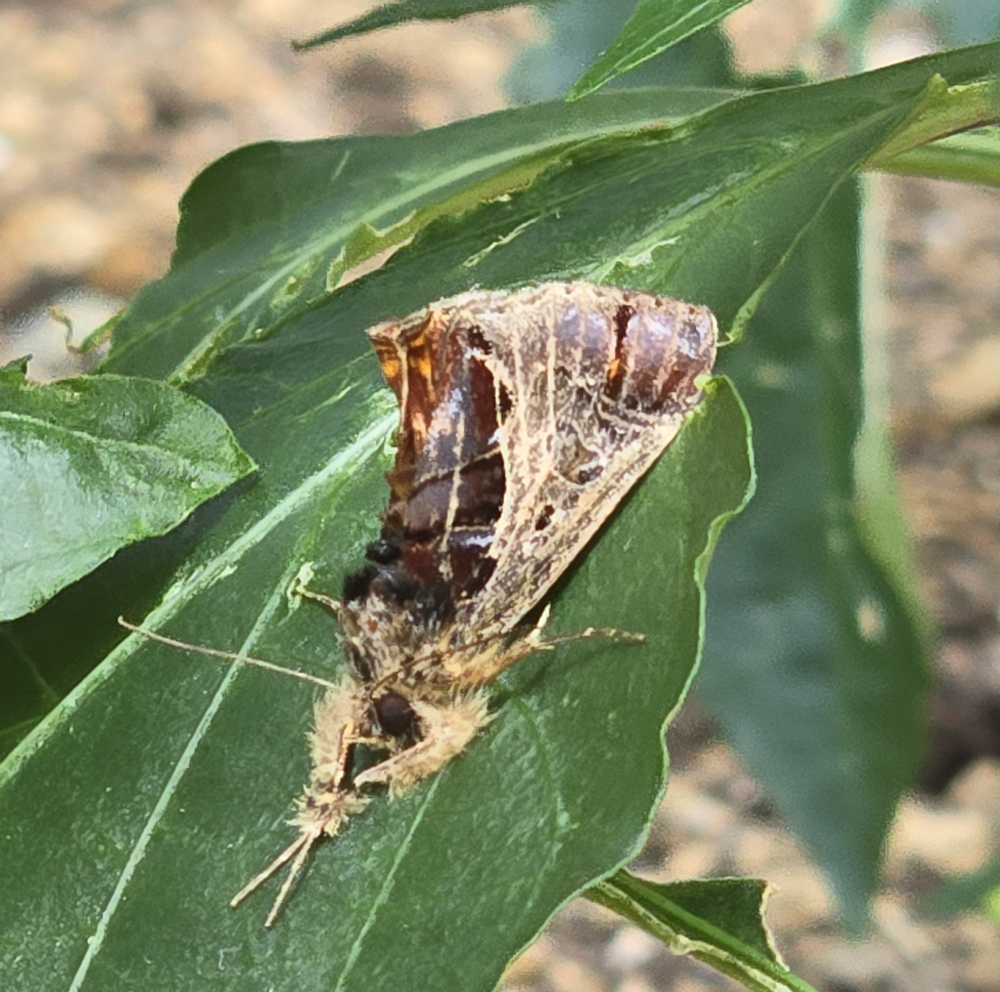

Ladybug |
|
| Ladybugs are a good sign in a garden because it can mean fewer problems from pests, particularly the dreaded aphids. Aphids feed on plant tissues and can also transmit viruses to plants, but an adult ladybug may consume hundreds of aphids a day and thousands in its lifetime. In addition to aphids, ladybugs also feed on other soft-bodied, plant-eating insects, including: Mites Scales Thrips White Flies All of these insects can negatively affect garden plants, particularly vegetables. Making the presence of ladybugs welcoming |

|
Rolypoly> |
| Rolypolys are insects that primarly feed on decaying material, in the process breaking down nutrients and returning them to the soil. In few quantities this insects can be beneficial to the soil and plants, but if their populations grow a lot it may be bad for the plants in the garden. |

|
Mushrooms Panaeolus foenisecii> |
| After several hours of looking mushrooms in google, that species in the name seems the more accurate. They are listed as psychoactive; however, the mushroom does not produce any hallucinogenic effects. As a mushhrom they break down organic matter, which increases the number of nutrients in the soil, helping plants around. |
Commelia communis |
|
| Commelina communis, commonly known as the Asiatic dayflower, is an herbaceous annual plant in the dayflower family. It gets its name because the blooms last for only one day. In Europe and much of eastern North America, it has spread to become a noxious weed. In the last week one blue flower bloom from this plant. |

|
Sonchus oleraceus |
| This plant appeared out of nowhere in the last 3 weeks. It has some medical and gastronomical uses, they spread their seeds similar as a dandelion, we can see that is how it spread in our garden in the 3rd entrie of the rosemary. |

|
Pachytomella parallela |
| This is a specie of insect with very little information in their relationship with plants, it doesnt seem that its a plague, that photo was taken in the 3rd week in the cucumbers, but there were no negative disruptions in that area of the garden. It seems it was only passing by. |
|  | Mothra (Callopistria floridensis) |
| This is a moth that itself it doesnt affect plants, however their larvae feeds in a variety of ferns. These larvae are quite big and leaves a lot of destruction in the plants leafes, but that was not seen in our garden. It was just taking some rest in our plants. |

|
Larvae |
| Because of their size I cannot identify exactly what type of larvae are, but they were the responsible of eating all the peppers leafs in week 5, after that they were still present around those plants, but they were less destructive. |

|
Rotten pepper |
| The reason some fruits or vegetables rotten while still growing its because of lack of nutrients in the plant, making them vulnerable and uncapable of repair any type of damage, making them weak and suitable for fungi and bacteria |